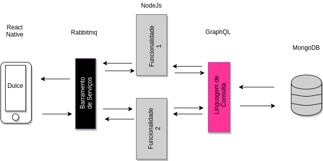
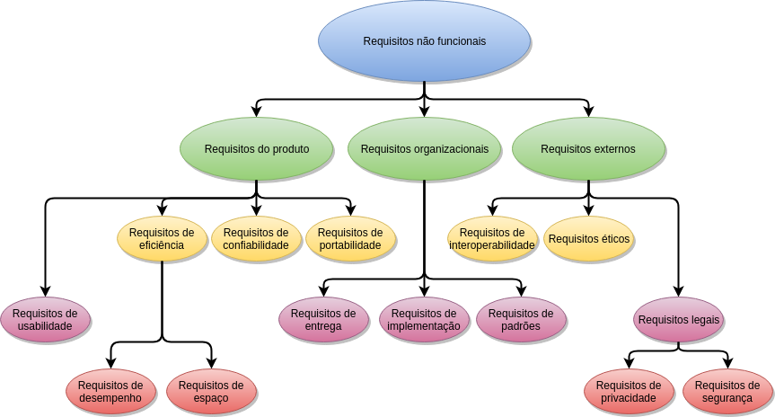

Especificação
Léxico
Definições utilizadas neste projeto:
AGR - Acordo Geral de Gerenciamento de Resultados;Android - Sistema operacional móvel suportado pela Google;
API - Application Programming Interface (Interface de Programação de Aplicativos)
EPS - disciplina de Engenharia de Produto de Software;
iOS - Sistema operacional móvel da Apple Inc.;
MDS - disciplina de Métodos de Desenvolvimento de Software;
SES-DF - Secretaria de Estado de Saúde do Distrito Federal;
SO - Sistema Operacional;
Dulce - Dispositivo Unificado para a Construção de Escala;
Protótipo de Média Fidelidade
O protótipo de média fidelidade foi realizado de forma á exibir ao cliente a forma como desejamos aplicar a solução apor meio do aplicativo Dulce. O protótipo de média fidelidade possui diferenças com o anterior, por motivos de modificações no escopo ao longo das sprints.
Para mais detalhes:
PDF do protótipoProtótipo com funcionalidades
Protótipo de Baixa Fidelidade
O documento possui o objetivo de apresentar o protótipo de baixa fidelidade do aplicativo referente ao projeto AGR. Inicialmente foi considerado o login e a análise de dados sobre a escala de profissionais, equipamentos e medicamentos disponíveis no hospital selecionado para os gestores da área da saúde acessarem.

As setas indica o caminho a ser seguido pelo usuário conseguir examinar cada informação do setor desejado.
Roadmap
Story Map do projeto
Para facilitar a visualização nosso Roadmap foi dividido em 5 grandes áreas de acordo com nossa EAP. Cada grupo tem suas Competências ou Features e Histórias ou Tasks seguindo o modelo Story Map adaptado.Story Map por papeis
O Roadmap por papeis pode ser visto aqui.Mapa de requisitos
Tema de investimento
Aplicativo mobile IOS/Android para auditoria de escalas.Épicos
Controle de escalas
| Para | os funcionários da saúde |
|---|---|
| Que | tem dificuldade para planejar a escala |
| a(o) | D.u.l.c.e |
| é um | aplicativo IOS/Android |
| que | provem o controle e modificação da escala |
| diferente | do TrakCare e do Excel que contém muitos passos para modificação da escala |
| nossa solução | facilita a modificação por meio de um aplicativo de fácil uso. |
| Escopo | |
| Critérios de sucesso | Planejar uma escala futura; manter e modificar uma escala vinda do TrakCare; |
| No escopo | Tela no estilo agenda Google ou IOS para planejamento de uma escala futura; Tela no estilo agenda Google ou IOS para modificar uma escala montada no TrakCare; Tela no estilo agenda Google ou IOS para visualização da escala de um médico. Tela para visualização da escala de todos os médicos juntos; |
| Fora do escopo | Deletar escala; Atualizar escala do TrakCare |
| Requisitos não funcionais | Dados devem estar disponíveis apenas para os níveis de acesso permitidos; deve ser de facil uso |
Controle de usuários
| Para | os funcionários da saúde |
|---|---|
| Que | precisam modificar escalas e visualizar os médicos de maneira segura |
| a(o) | D.u.l.c.e |
| é um(a) | aplicativo IOS/Android |
| que | permite que o médico faça login veja sua escala e que o gestor do setor, o gerente de pessoas e o supervisor da SES façam login e visualizem os médicos e suas escalas |
| diferente | do excel |
| nossa solução | permite que o médico veja sua escal e que gestores, gerente de pessoas e supervisores façam alteração e vejam os médicos |
| Escopo | |
| Critérios de sucesso | Login autenticado; Páginas com permissões especificas. |
| No escopo | Tela para login; Tela para o responsavel do setor ver os médicos do seu setor; Tela para o gerente de pessoas do hospital ver todos os setores e ver os médicos de cada setor; Tela para o supervisor da SES ver todos os hospitais, ver todos os setores de cada hospital e ver os médicos de cada setor . |
| Fora do escopo | Tela para cadastro de usuário; Tela para alteração de usuário; Tela para deleção de usuário.Gestor ver outro setor, Gerente de pessoas ver outro hospital |
| Requisitos não funcionais | Acesso deve ser disponivel apenas para funcionários cadastrados no TrakCare. |
Gerenciar atestados
| Para | os funcionários da saúde |
|---|---|
| Que | precisam enviar/validar curriculos |
| a(o) | D.u.l.c.e |
| é um(a) | aplicativo IOS/Android |
| que | permite que o médico envie atestado e que o gestor do setor avalie e dê feeback |
| diferente | do excel |
| nossa solução | faz o desconto das horas automaticamente após a aprovação do gestor, e permite que o gestor solicite homologação do atestado para o médico. |
| Escopo | |
| Critérios de sucesso | Enviar/Receber atestados; Validar atestados; Solicitar homologação; Descontar horas no dia do atestado. |
| No escopo | Tela para envio de atestado; Tela para recebimento de notificação; Tela para avaliação e solicitação de homologação de atestado. Área de texto para dar feedback ao médico; Médicos devem receber notificações; Gestores devem receber notificações. |
| Fora do escopo | Tela para desconto das horas; Supervisores e Gerentes de Pessoas não devem receber notificações. |
| Requisitos não funcionais | Acesso deve ser disponível apenas para funcionários cadastrados no TrakCare. |
Visualizar instalações
| Para | os funcionários da saúde |
|---|---|
| Que | precisam gerenciar hospitais e setores de hospitais |
| a(o) | D.u.l.c.e |
| é um(a) | aplicativo IOS/Android |
| que | permite que o supervisor da SES veja todos os hospitais, que o gerente de pessoas veja todos os setores de um hospital e que o gestor veja todos os médicos de um setor. |
| diferente | do excel |
| nossa solução | garante o acesso especifico aos usuários com permissões e não permite que usuários não autorizados vejam outros setores/hospitais/médicos |
| Escopo | |
| Critérios de sucesso | Supervisor visualizar todos hospitais, setores e médicos (separados por camadas hospitais>setores>médicos); Gerente de pessoas visualizar todos os setores e médicos de um hospital (separados por camadas setores>médicos); Gestores do setor podem visualizar todos os médicos do setor. |
| No escopo | Tela para Supervisor visualizar todos os hospitais; Tela para Supervisor visualizar todos os setores de um hospital; Tela para Supervisor visualizar todos os médicos de um setor; Tela para Gerente de pessoas visualizar todos os setores de um hospital; Tela para Gerente de pessoas visualizar todos os médicos de um setor; Tela para Gestor visualizar todos os médicos de um setor; |
| Fora do escopo | Tela para Gerente de pessoas visualizar todos os hospitais; Tela para Gestor visualizar todos os setores de um hospital; Tela para Gestor visualizar todos os hospitais; |
| Requisitos não funcionais | Acesso deve ser disponível apenas para funcionários cadastrados no TrakCare. |
Features
As features estão mapeadas no github com a label FeatureHistórias de usuário
As histórias de usuário estão mapeadas no github com a label Histórias de UsuárioDocumento de Visão
Sumário
- 1. Introdução
- 1.1 Propósito
- 1.2 Escopo
- 1.3 Visão Geral do Documento
- 2. Posicionamento
- 2.1 Oportunidade de negócio
- 2.2 Instrução do Problema
- 2.3 Instrução de Posição do Produto
- 3. Visão Geral do Produto
- 3.1 Escopo do Produto
- 3.2 Propósito do produto
- 3.3 Recursos do produto
- 4. Visão Geral do Produto
- 4.1 Perfis das Partes Interessadas
- 4.2 Perfis do Usuário
- 5. Restrições
- 6. Referências
1. Introdução
1.1 Propósito:
Este artefato apresenta as justificativas para o desenvolvimento da aplicação mobile Dulce (Dispositivo Unificado de Colaboração para Construção de Escala) auxiliando na compreensão do contexto em que a aplicação está inserida, assim como os objetivos e metas que a equipe das disciplinas de Métodos de Desenvolvimento de Software e Engenharia do Produto de Software procuram alcançar com o desenvolvimento deste sistema. Além destas descrições do sistema, serão apresentados esquemas e diagramas que garantem a visibilidade do funcionamento e de certas características do sistema para a equipe, permitindo que os mesmos possam trabalhar de uma maneira produtiva e sincronizada.
1.2 Escopo:
O Documento de Visão tem o objetivo de informar aos envolvidos a problematização a ser resolvida e as funcionalidades do produto que serão atendidas pelo projeto Dulce. Tendo em vista que este documento será atualizado durante a produção do aplicativo.
1.3 Visão Geral do Documento:
O conteúdo deste documento está organizado de forma a fornecer uma visão dos envolvidos no projeto, das necessidades apontadas, dos benefícios esperados, e das funcionalidades e suas características para atender a estes benefícios. Também são apresentados aqui requisitos importantes para o produto, sem detalhar cada funcionalidade do sistema, visto que esta atividade será realizada na especificação dos casos de uso.
2. Posicionamento
2.1 Oportunidade de negócio:
Com a implantação do Dulce, as áreas de gestão de pessoal na Secretaria de Saúde do DF tenderão a se tornar mais eficientes. Dulce será um aplicativo voltado para gestão e gerenciamento de escalas. Com a implementação de Dulce a saúde pública tende a ter uma grande melhoria em sua gestão, principalmente na relação entre o gestor e os funcionários de um determinado setor, ganhando agilidade para criar e remanejar escalas.
2.2 Instrução do Problema:
A Secretaria de Saúde do DF enfrenta dificuldades no gerenciamento do pessoal dos hospitais públicos.
As escalas dos setores dos hospitais são feitas manualmente no Excel e colocadas mensalmente no Software TrakCare, onde os profissionais podem visualizar a própria escala e colocar as consultas/trabalhos realizados. Além do TrakCare, há também o sistema de ponto eletrônico, em que os servidores o utilizam a fim de marcar presença.
Esses dois sistemas são independentes, e muitas vezes as informações entre os dois não coincidem.
| Tipo | Descrição |
| Problema | A dificuldade na gestão de pessoal e no gerenciamento das escalas |
| Afeta | Recursos financeiros, profissionais da área, população em geral |
| Impacto | Alocação e remanejamento de profissionais no sistema de saúde requer muito trabalho manual |
| Solução | Aplicativo Dulce para aprimorar o gerenciamento das escalas dos profissionais do SES-DF |
Diagrama de Fishbone:
2.3 Instrução de Posição do Produto:
Dulce é um aplicativo que oferecerá suporte aos gestores do hospital, para terem maior controle sobre as escalas e o remanejamento de pessoal. Além disso, o funcionario poderá consultar sua escala, pedir alteração ou remanejamento, e se for preciso, enviar para o gestor do seu devido setor um atestado nos casos de problemas de saúde, tudo isso por meio do dispositivo móvel.
3. Visão Geral do Produto
3.1 Escopo do produto:
A Secretaria de Saúde do DF apresenta deficiências no gerenciamento de escalas, o que pode afetar a qualidade do sistema. O Dulce será utilizado para documentar as escalas planejadas e as realizadas, agindo como um sistema de auditoria com o objetivo de fornecer informações relevantes aos gestores para uma melhor organização e gerenciamento das escalas montadas para seus funcionários.
3.2 Propósito do produto:
Dulce tem o propósito de auxiliar a gestão no sistema de saúde do DF, promovendo uma interface entre gestor e pessoal de um determinado setor, auxiliando os gestores a criar escalas dos servidores do seu setor, facilitando também o remanejamento de escalas, e aos funcionários, seu controle de ponto.
3.3 Recursos do produto:
O principal recurso ou funcionalidade do produto é auxiliar na montagem de escalas de funcionários, auxiliando assim aos gestores, que terão uma maior facilidade para monitorar os horários que estão sendo cumpridos, e aos funcionários que poderão interagir mais com sua escala designada, podendo visualizar, pedir alteração e até enviar atestados.
4. Descrição das Partes Envolvidas
4.1 Perfis das Partes Interessadas:
- Cliente: O cliente é o idealizador do projeto.
- Usuários: Funcionários da Secretaria de Saúde do DF.
- Equipe: A equipe é composta por graduandos em Engenharia de Software pela Universidade de Brasília, Campus Gama, discentes das disciplinas de Engenharia de Produto de Software e Métodos de Desenvolvimento de Software.
TrakCare
- O sistema eletrônico atual da Secretaria de Saúde do DF. O qual reúne todos os dados de consultas, alergias, exames e histórico médico da rede pública de saúde do Distrito Federal.
Mobi Saúde
- É um aplicativo que facilita a administração hospitalar e de unidades de saúde, controlando a escala de funcionários e agilizando a comunicação com o corpo clínico.
ERP Radar Empresarial
- É um software integrado para gestão de empresas. Ele busca cobrir todas as áreas gerenciáveis de empresa: vendas, finanças, materiais, produção, custos, serviços, controladoria, RH, GED, BI e qualidade, adaptável às necessidades e à realidade de empresas de todos os portes e segmentos.
ContaAzul
- É um software feito para realização de toda a gestão de um negócio com um único sistema de controle financeiro, com uma visão de relatórios em tempo real, das contas a vencer à situação do fluxo de caixa; com controle de estoque de produtos, facilita a elaboração de relatórios gerenciais
Gestão Plus
- Este software de gestão facilita a organização de informações fiscais e contábeis, além dos dados relativos aos clientes e às vendas, cadastro de produtos etc.
- O sistema necessita de informações que serão fornecidas pela SES-DF;
- O sistema deverá estar acessível até julho de 2018;
- O sistema deverá funcionar tanto em Android como em iOS;
4.2 Perfis do Usuário:
Os Usuários serão os gestores dos setores do hospital e os servidores da saúde, como, médicos, fisioterapeutas e enfermeiros, que trabalham no hospital.
4.3 Alternativas e Concorrência


5. Restrições:
6. Referências:
Vision – Scaled Agile Framework, Acesso em: 19/03/2018, 21:10, Horário de Brasília.
O Globo Saúde Pública do país sofre de má gestão, Acesso em: 20/03/2018, 20:09, Horário de Brasília.
Secretaria de Estado de Saúde do Distrito Federal, Acesso em: 20/03/2018, 20:16, Horário de Brasília.
Projeto Receituário Médico - Documento de visão, Acesso em: 20/03/2018, 20:54, Horário de Brasília.
Radar Empresarial Segurança nos processos, Acesso em: 22/03/2018, 17:30, Horário de Brasília.
Aplicativo de gestao Hospitalar, Acesso em: 22/03/2018, 18:50, Horário de Brasília.
TrakCare Sistema de informação em Saude, Acesso em: 22/03/2018, 20:54, Horário de Brasília.
Documento de Arquitetura
Sumário
- Introdução
- Finalidade
- Escopo
- Referências
- Representação da Arquitetura
- Metas Restrições de Arquitetura
- Visão de implementação
- Bibliografia
1. Introdução
1.1 Finalidade
O documento de arquitetura tem a função de especificar decisões arquiteturais relevantes na produção e implementação do projeto Dulce, empregando a tecnologia React Native, descrevendo seus aspectos e funcionalidades do sistema de forma clara e objetiva.
1.2 Escopo
Este documento se aplica à produção do aplicativo Dulce, implementado para as plataformas IOS e Android, representando a arquitetura utilizada.
1.3 Referências
Documento de VisãoGlossário.
2. Representação da Arquitetura


3. Metas Restrições de Arquitetura
Para o desenvolvimento deste projeto serão ultilizadas as seguintes tecnologias:
- React-native: Utilizado para a construção do aplicativo em IOS e Android;
- Node.js: Plataforma de desenvolvimento da API;
- Base de dados fornecida pela Secretaria de Saúde;
- Manutenibilidade: O código deve ser facilmente modificado e corrigido.
4. Visão de Implementação
Diagrama de Classes

5. Bibliografia
Secretaria de Estado de Saúde do Distrito Federal, Acesso em: 23/03/2018, 11:36, Horário de Brasília.
React-native, Acesso em: 23/03/2018, 11:20, Horário de Brasília.
Node.js, Acesso em: 03/04/2018, 12:33, Horário de Brasília.
React Native Architecture: Explained! Acesso em: 22/03/2018, 12:05, Horário de Brasília.
Secretaria de Estado de Saúde do Distrito Federal, Acesso em: 23/03/2018, 11:36, Horário de Brasília.
React-native, Acesso em: 23/03/2018, 11:20, Horário de Brasília.
Node.js, Acesso em: 03/04/2018, 12:33, Horário de Brasília.
React Native Architecture: Explained! Acesso em: 22/03/2018, 12:05, Horário de Brasília.
Requisito de Qualidade:
Tipos de requisitos de qualidade:
1 - Requisitos do produto:
1.1 - Requisitos de facilidade de uso:
| Requisito | Descrição |
|---|---|
| RQ 01 | A interação do usuário com o aplicativo deverá ser intuitiva. |
| RQ 02 | Não deverá existir a necessidade de treinamento preparatório para o uso do aplicativo. |
| RQ 03 | O aplicativo deverá possuir prevenção e notificação de erros, caso o preenchimento de dados for incorreto. |
| RQ 04 | O aplicativo deverá ser disponibilizado em língua portuguesa (Brasil). |
| RQ 05 | O aplicativo deverá possuir design responsivo adequando-se ao aparelho em que é utilizado de forma correta. |
1.2 - Requisitos de confiabilidade:
| Requisito | Descrição |
|---|---|
| RQ 06 | Somente os funcionários cadastrados terão acesso aos seus dados pessoais. Em caso específico, do cargo de gestor, terá acesso as informações necessárias dos outros usuários do aplicativo. |
| RQ 07 | Não deverá ocorrer erros nas informações contidas na base de dados que serão exibidos. |
1.3 - Requisitos de portablidade:
| Requisito | Descrição |
|---|---|
| RQ 08 | O aplicativo deverá ter uma versão para Android. (Android 4.1 ou superior) |
| RQ 09 | O aplicativo deverá ter uma versão IOS. (iOS 8.0 ou superior) |
2- Requisitos organizacionais:
2.1 - Requisitos de entrega:
| Requisito | Descrição |
|---|---|
| RQ 10 | Seguindo a metodologia ágil, o desenvolvimento do aplicativo será realizado por sprints com entregas semanais, e deverá estar disponivel para o usuário até o final do primeiro semestre de 2018. |
| RQ 11 | Na priorização das features, são consideradas a qualidade técnica da equipe juntamente com a importância dos requisitos. |
2.2 - Requisitos de implementação:
| Requisito | Descrição |
|---|---|
| RQ 12 | O software deverá ser desenvolvido utilizando a linguagem JavaScript com o framework React-Native como front-end. |
| RQ 13 | No Back-end, API's serão desenvolvidas utilizando o framework Node.js . |
| RQ 14 | O sistema deverá portar 90% de cobertura de testes. |
2.3 - Requisitos de padrões:
| Requisito | Descrição |
|---|---|
| RQ 15 | O código deverá seguir a folha de estilo da Airbnb. |
| RQ 16 | O código deverá ser em inglês. |
3- Requisitos externos:
3.1 - Requisitos éticos:
| Requisito | Descrição |
|---|---|
| RQ 17 | Os desenvolvedores do software se comprometem a não divulgar dados sensíveis dos usuários do aplicativo. |
3.2 - Requisitos legais:
| Requisito | Descrição |
|---|---|
| RQ 18 | O software deverá obedecer o critério de acessos referente aos dados sensíveis armazenados pela instituição. |
| RQ 19 | O Software deverá seguir o Projeto de Lei nº 5276/16, relacionado á dados sensíveis. |